修改文件权限(chmod)
回忆
- 上次研究的是修改所属组
- chgrp
- 通过修改文件的所属组
- 可以控制文件的权限
- 角色依然分为
- u 文件拥有者
- g 文件拥有者同组其他用户
- o 文件拥有者所属组之外的用户
- a 所有用户
- 权限分为
- r 读
- w 写
- x 执行
- 那我可以修改文件的所有者吗？
修改所有者
- chown 可以修改所有者
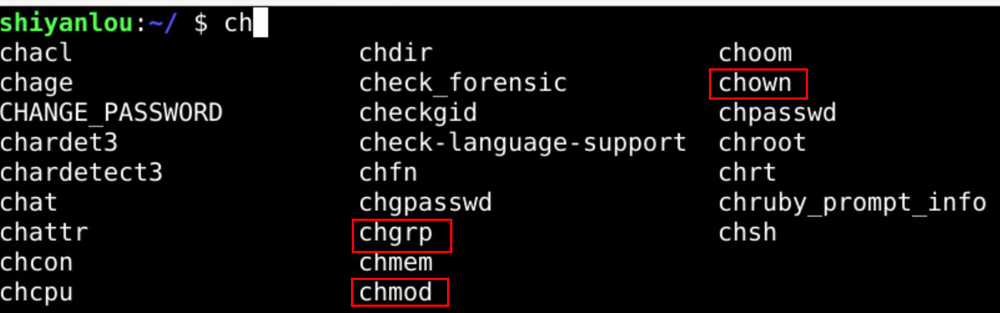
- 意思是change owner
查看帮助手册
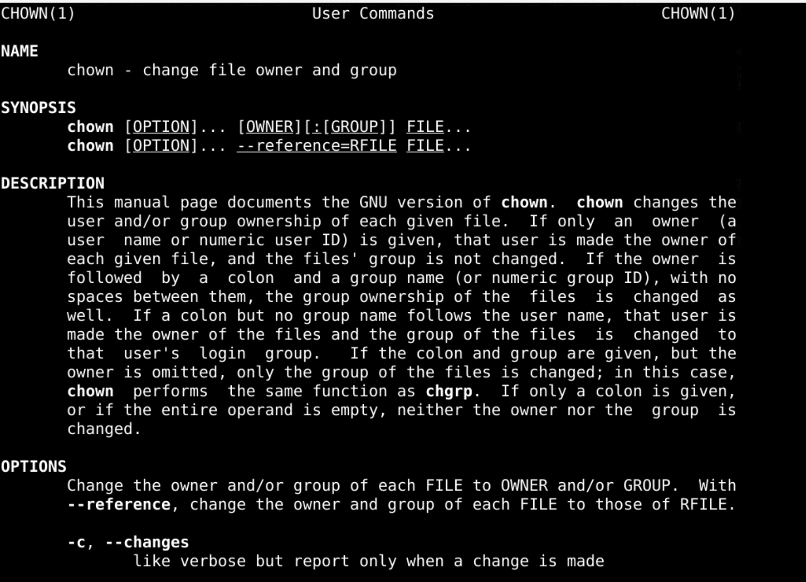
- 这个命令好像
- 既可以修改owner
- 又可以修改group
直接修改所有者
- sudo chown oeasy test.sh
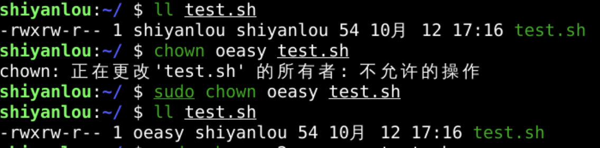
- 可以既
- 修改owner
- 又修改group吗？
查看手册
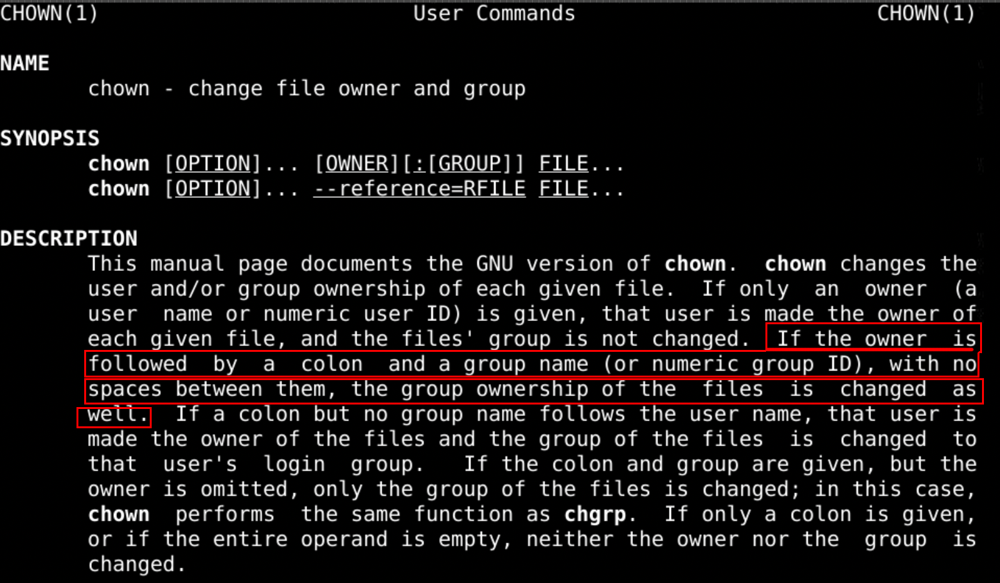
- 确实可以两个都修改
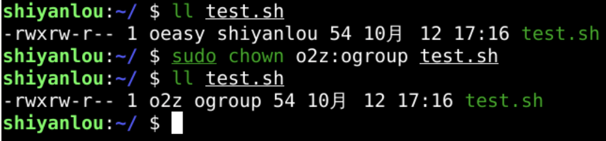
- 如果冒号后面没有东西呢？
默认登录组
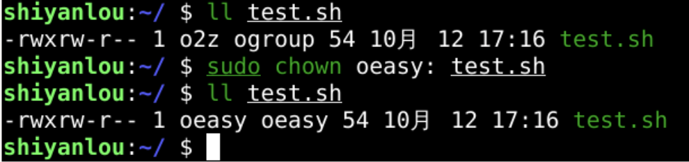
- 查看帮助
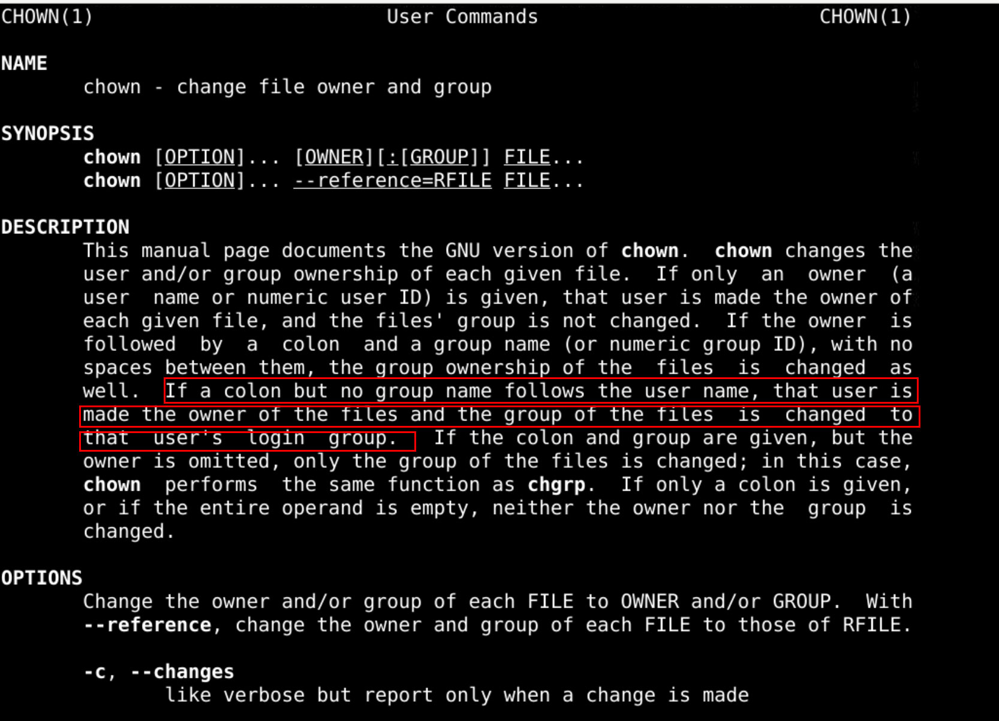
- 冒号后面缺省的是用户的默认登录组
- 如果冒号前面缺省呢？
缺省用户名
- 如果冒号前面缺省的话
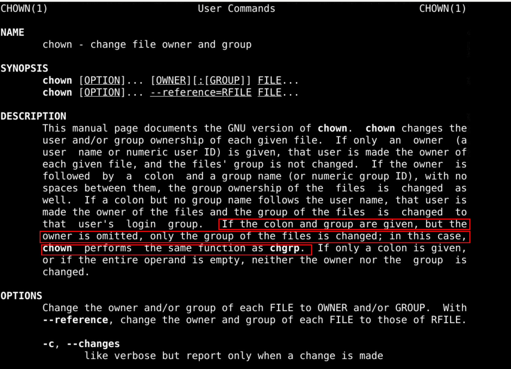
- 作用相当于chgrp
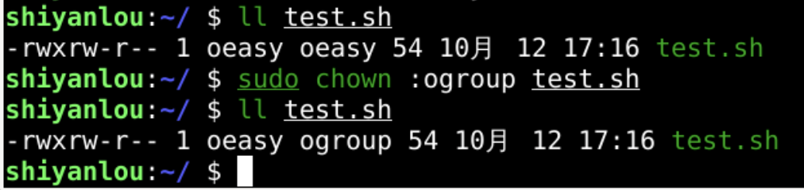
- 可以设置文件夹的权限、所有者和所属组吗？
文件夹权限
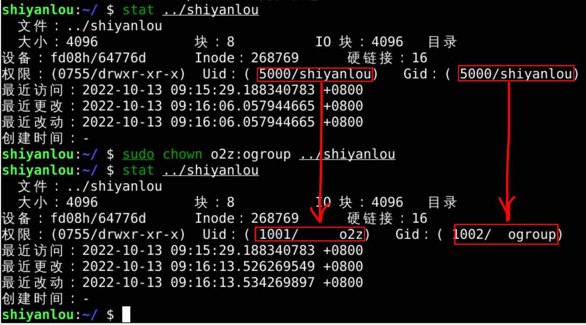
- 修改成功
- 文件夹内部呢？
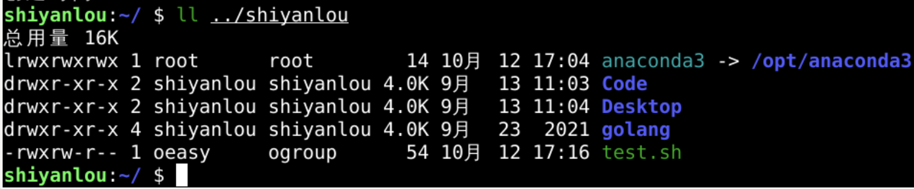
- 文件夹中的文件不受影响
- 如果我想同时修改文件夹内部的文件夹和文件呢？
查看文档
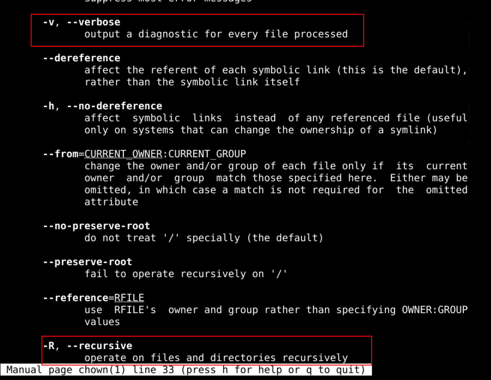
- -R可以递归修改文件夹
- -v可以输出修改细节
递归修改
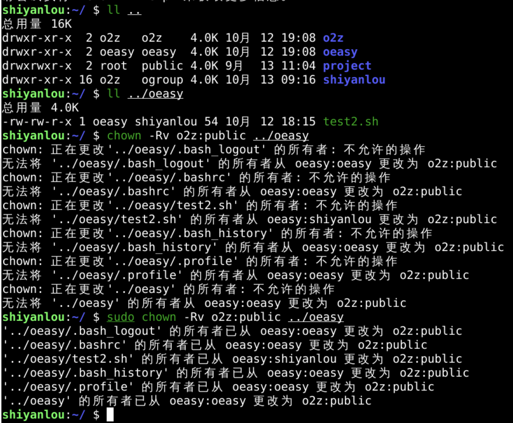
漫画
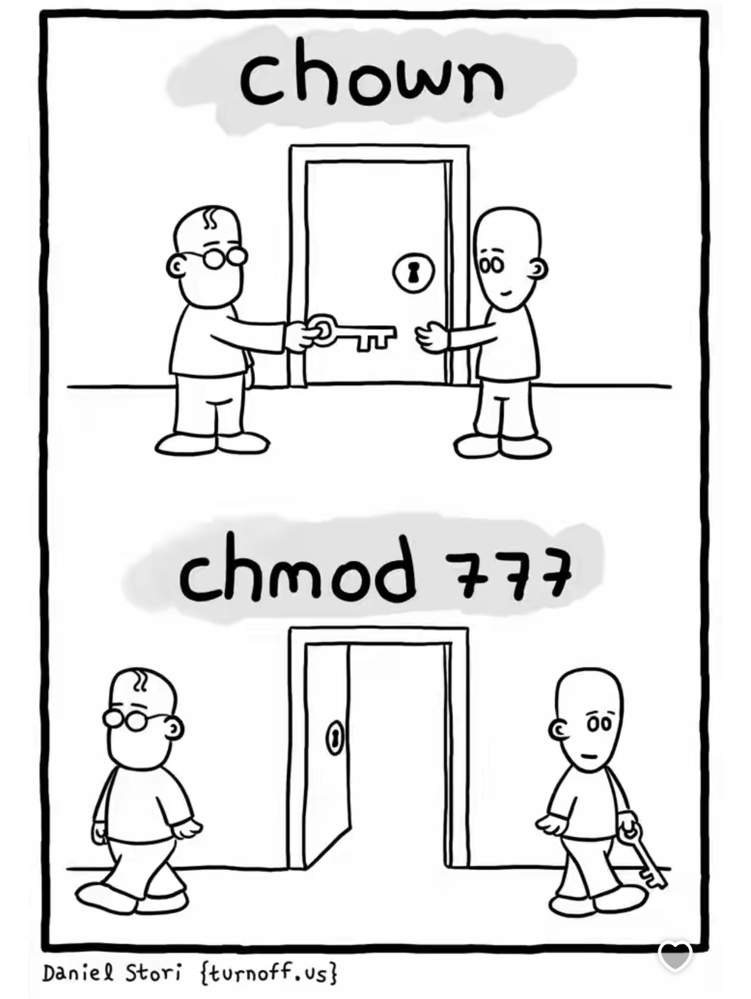
总结 🤨
- 我们这次了解了命令chown
- 可以修改文件的所有者
- 也可以修改文件的所属组
- 而且
- 还可以对于文件夹设置所有者
- 甚至设置递归地设置文件夹的所有者
- 这两个可以配合
- 通过chown设置所有者和组
- 通过chmod设置权限
- 但是也发现一些问题

- sudo命令的可执行权限是s
- 这应该如何理解呢？🤔
- 下次再说👋